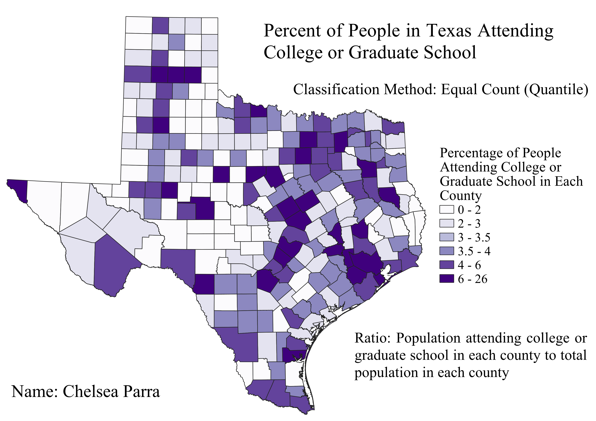

In order to normalize my data, I created a ratio using the total population of people attending college or graduate school in each county and the total population in each county. By dividing the total number of people attending college or graduate school by the total population in the county, you'll get a choropleth that isn't skewed by counties that have much larger populations. This ratio helps us to compare the counties better and shows us which counties have a higher proportion of people attending college or graduate school.
For this map I used the ratio of people attending college or graduate school and the total population of people in the county. For classification I used quantiles or equal count classification. This method creates a choropleth that has more of an even distribution in color. This is because each group or interval is getting an equal number values. This also means each class is more evenly represented. The disadvantage to this is that the classes can have big gaps between each other. So for example for this map the fifth class represents 43-58 people, while the sixth class represents 58-260 people. This means the sixth category is a bit over-weighed. It can also show that some counties have a really high ratio when in reality they might just fit into the higher class becasue it has such a wide range of values
For this map I used the same ratio as before but using the equal interval classification. Looking at the map it's dominated by the lighter shade classes, with only one county of the darkest shade. This method makes it so that each class has an equal number of values and each range is the same. The adavatage to this method is that the gaps between each class aren't as skewed. However, the disadvantage to this is that most of the counties fall into the lower classes leaving us with a very one-toned map.
For this map I represented the same ratio as before but used jenks natural breaks. This method uses natural classes or optimal ranges for each class. This method created a choropleth that was pretty much inbetween the last two maps. It does not have a dominance of light colors or smaller classes and also doesn't have that many dark colors. The advantage to this method is that it identifies real classes in the data. This means it will more accuratly represent the data than previous methods. I also believe this method beats out the others because the classes are farily well distributed and the classes are not heavily skewed.